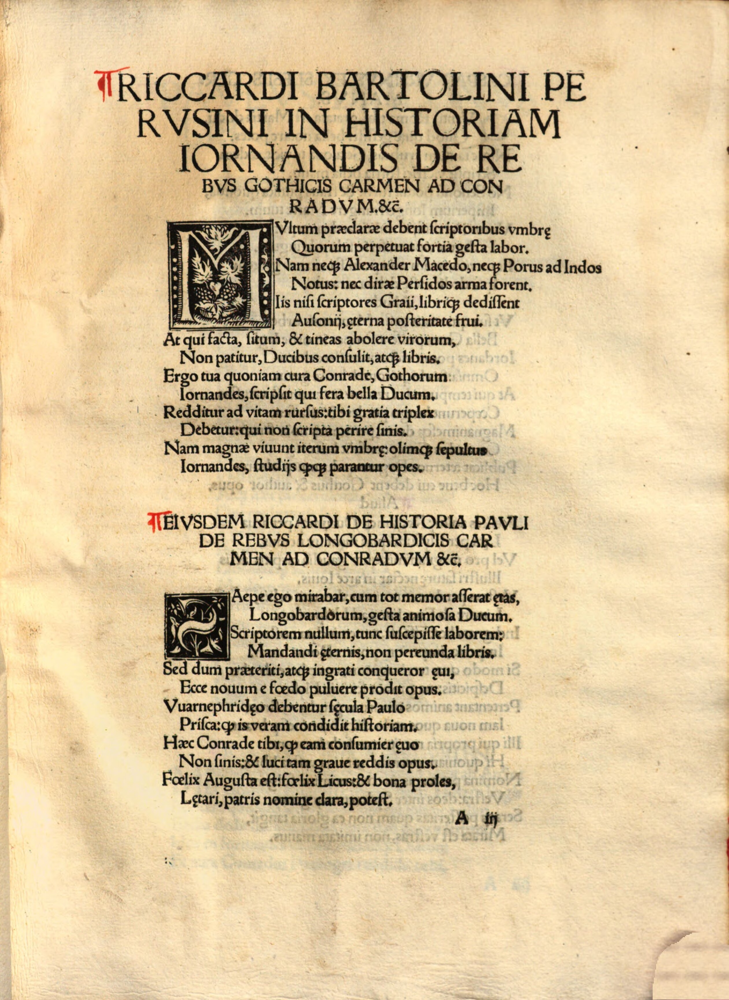

Peutinger 9 (Riccardo Bartolini)
Faksimile

Transkription
Riccardi Bartolini Perusini in historiam Iornandis de rebus Gothicis carmen ad Conradum et ceteros.
Multum praeclarae debent scriptoribus umbrae
Quorum perpetuat fortia gesta labor.
Nam neque Alexander Macedo, neque Porus ad Indos
Notus: nec dirae Persidos arma forent.
Iis nisi scriptores Graii, librique dedissent
Ausonii, aeterna posteritate frui.
At qui facta, situm, et tineas abolere virorum,
Non patitur, Ducibus consulit, atque libris.
Ergo tua quoniam cura Conrade, Gothorum
Iornandes, scripsit qui fera bella Ducum.
Redditur ad vitam rursus: tibi gratia triplex
Debetur: qui non scripta perire sinis.
Nam magnae vivunt iterum umbrae: olimque sepultus
Iornandes, studiis quaeque parantur opes.
Übersetzung
Ein Lied von Riccardo Bartolini aus Perugia an Konrad und die übrigen auf die Geschichte des Iornandes über die gothischen Begebenheiten
Viel schulden die berühmten Schatten den Schriftstellern, deren Arbeit tapfere Taten fortleben lässt. Denn weder der Makedone Alexander noch der Weg zu den Indern: und auch die Waffen des grauenvollen Persiens wären nicht bekannt. Wenn diesen die griechischen Schriftsteller und die italischen Bücher nicht gewährt hätten, sich an ewigem Nachleben zu erfreuen. Aber wer nicht zulässt, dass Schimmel und Motten die Taten der Männer zerstören, der sorgt für Herrscherpersönlichkeiten und für Bücher. Weil also durch deine Bemühung, Konrad, Iornandes, der die wilden Kriege der Anführer der Gothen niederschrieb, wieder zum Leben zurückkehrt: <deshalb> wird dir dreifacher Dank geschuldet: Der du nicht zulässt, dass Schriften untergehen. Denn die großen Schatten leben wiederum: Und der einst begrabene Iornandes und alle Reichtümer, die durch <deine> Bemühungen gewonnen werden.
Metadaten
| Titel des Gedichts: | Riccardi Bartolini Perusini in historiam Iornandis de rebus Gothicis carmen ad Conradum et ceteros. |
| Autor der Gedichts: | Riccardo Bartolini (Riccardus Bartholinus) |
| Containerwerk: | Iordanes, Gotus: De rebus Gothorum et Pauli Warnefridi historia Longobardiae libri, Augsburg 1515 |
| Autor des Containerwerks: | Konrad Peutinger (Conradus Peutinger) |
| Gattung des Containerwerks: | Edition, Edition von De rebus Gothorum des Iordanes, Historiographie |
| Erscheinungsjahr: | 1515 |
| Verschlagwortung: | Nachruhm, Alexander, Inder, Makedonien, Persien, Buch, Schriftsteller, Rettung vor Vergessen, Wiederbelebung, Auferstehung, Krieg, Goten, Dank |